分析
2023 年的重划做了什么 — 一篇导读
本页按顺序梳理证据。每一个说法都链接到可以亲自核查的交互视图。 数字只做描述；评判由你来做。
第 1 节
本页怎么读
看一次边界变更有三种视角，本页三种都用：
- 分区的形状。这些线本身变得更规则还是更不规则了？这是公众最先想到的视角 ——也是我们在第 4 节里检验得最仔细的一个。
- 流向。哪些区域、学生和项目搬到了哪里？这是 边界变更页的任务。
- 对人的影响。通勤、容量、人口构成和项目可达性发生了什么变化， 对全学区和每个分区分别如何？这是第 3 节， 用的是地图工具的测量结果。
把入口页的承诺再说一遍：本站没有任何数字是公平分数。能测量的我们都测了， 不能测量的我们如实描述。这一切是否公平，是属于受影响者的判断—— 本页只是确保这个判断可以建立在充分了解之上。
第 2 节
发生了什么
2018 年，学区开设了 Wilburton 小学——一所为缓解小学拥挤而新建的学校 ——并从周边分区各划出一块拼成它的分区。五年之后局面反转：小学入学人数在下降， 学区预计出现预算缺口。到 2022–23 学年，Wilburton 650 个座位的校舍只有约 350 名学生； Eastgate 的 529 个座位只有约 316 名。
2023 年，决定来得很快。学区表示它在 2022 年 10 月得出结论：入学人数回不来了；10 2023 年 2 月 9 日，临时督学建议关闭三所学校；经过公开听证，Ardmore 被保留 ——并获得了我们"定义"页所列的阿拉伯语传承语言项目—— 2023 年 3 月 16 日，学区委员会以 3 票赞成、2 票弃权表决关闭 Wilburton 和 Eastgate。2,3 两校的区域被划给三个邻区——Spiritridge、Enatai 和 Clyde Hill—— 项目也随学生迁移：高阶学习项目从 Spiritridge 迁到 Woodridge，Eastgate 的 Olympic 项目迁到 Spiritridge。合计约 13.6 平方公里的学区面积——住着大约 ——换了小学。
在校人数为学区自己的统计；"入学下降加预算缺口"是学区陈述的合并理由， 此处按其陈述转述。10,14 人口估计使用固定的 2020 年普查快照。
第 3 节
各项影响，逐一说明
下面每张卡片都从一个家庭真正会问的问题开始，再用变更前后的测量作答。 卡片上的小标签说明数字能走多远：已测量表示答案是算出来的， 部分测量表示数字只覆盖问题的一部分， 仅描述表示数据只允许我们如实用文字说明。
通勤 — 上学变远了吗？
已测量
我们沿真实道路网络计算了每户人家到指定学校的路线——驾车和步行分别算 ——并按学龄儿童的居住位置加权平均。对学区的大部分地方，答案就是没有变化： 16 个分区中有 11 个在 2023 年保持边界不变。对被改划的区域，答案是一笔实打实的代价：
- 原 Eastgate 区域的平均路程 。
- 原 Wilburton 区域的路程 。
两种单位讲出两个不同的故事，这正是切换按钮存在的理由：按驾车看，这些变化不算大； 按步行看，这是"走得到的学校"和"走不到的学校"的差别。就整个分区而言， 吸收了 Eastgate 区域的 Spiritridge，平均驾车时间从 4.0 分钟升到 7.5 分钟。 听起来不多——直到换成步行来说：同一段平均路程从 19 分钟的步行变成了 41 分钟的步行——从"孩子能自己走"变成"得有人开车接送，每天两趟"。
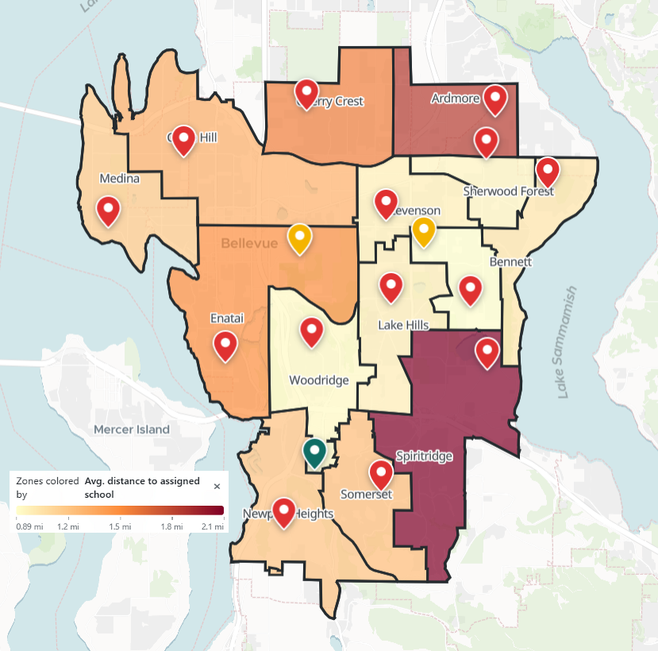
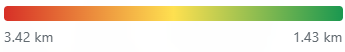
时间为不含堵车的典型估计；平均值按儿童居住位置加权（2020 年普查）。 多出的这些分钟是否配得上学区陈述的目标，不是一道数学题。
容量 — 校舍太空还是太挤？
已测量
这是学区自己引用的影响。14 2022–23 学年，Wilburton ， Eastgate —— 而 Spiritridge 。
学区合并报告里它自己的算术：截至 2022 年 10 月，18 所小学中有 8 所在校人数不足 400；按预测，到 2023–24 学年将是 18 所中的 10 所——关校之后则是 18 所中的 3 所。14 （这些数字用的是学区的 K–5 口径，不含学前儿童；本站其他地方的在校总数含学前儿童， 所以同一批学校在别处会略大一点。）
给个参照：110% 表示学生比座位多；63% 表示校舍约三分之一是空的。合并之后，两个极端都收窄了： Spiritridge 降到 ， Enatai 从 ， Clyde Hill 从 ——而 Woodridge 从 ， 它的边界一米都没动——因为高阶学习项目（连同它的学生）搬了进来。 记住最后这一条：它会在第 4 节再次出现，作为任何形状指标都看不见的变化。
2018 年那一侧的故事方向相反：Wilburton 之所以被建起来，是因为小学校舍超员， 它的开办给邻校减了压。这一段我们用文字而不用逐个百分比的地图来讲， 因为 2018 年前的容量数字是代理值（多为 2019 年设施评估向前套用），太软，画成图不诚实。 另外每个时期都要提醒一句：大多数学校的使用率变动来自寻常的入学漂移和校舍改造， 而不是边界变更——只有 2023 年动过的五个分区（以及 2018 年 Wilburton 的邻区） 的使用率故事才真正是重划写下的。
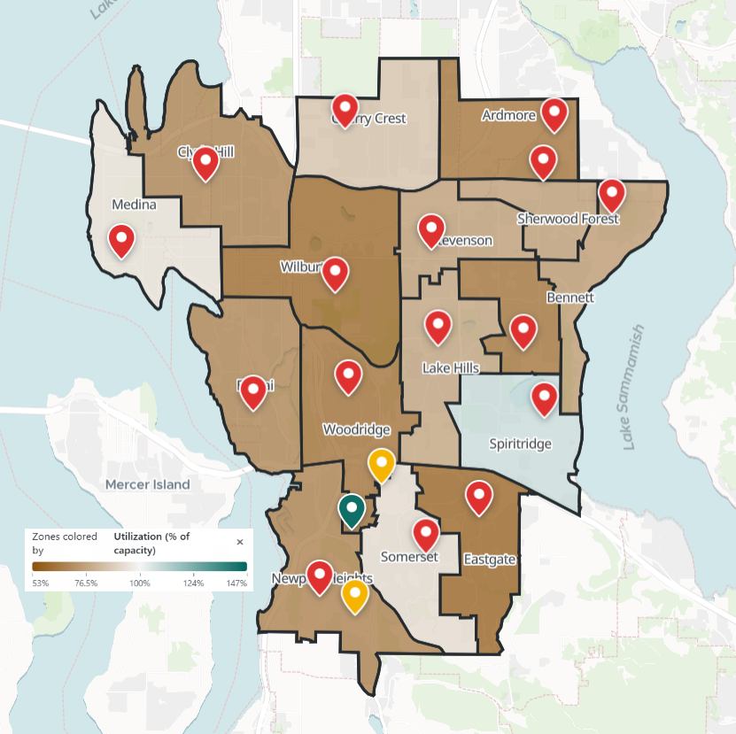
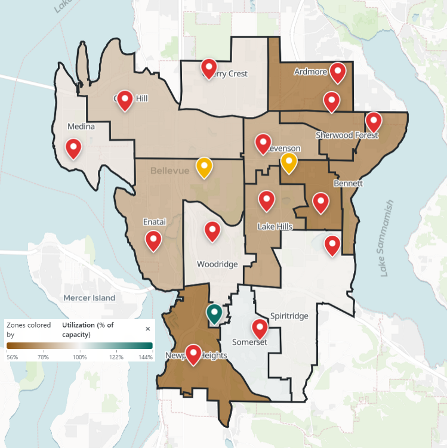
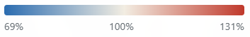
每个时期都用自己的在校人数，对照该时期记录最完整的容量； 个别容量值沿用较旧的设施评估——具体年份列在"方法与来源"。 约 100% 的使用率算"高效"还是"毫无余地"，是数字本身不会替你做的判断。
人口构成 — 这些线把孩子分开了吗？
已测量
先用平实的话讲清概念。贝尔维尤的家庭并不是均匀分布在城市里的—— 不同的社区有不同的白人、亚裔、西语裔、非裔构成。把入学分区线画在这之上， 每个分区就继承了一种构成。"分化"问的是各分区的构成彼此差多远： 如果每个分区都和全学区一模一样，就完全没有分化。有一个设计选择需要知道： 这里的每个时期都使用同一份固定的 2020 年普查人口。这些年里真实的家庭确实在搬家， 但我们刻意把人口固定住，这样你看到的时期间差异就只反映画线本身做了什么 ——公平的前后对比需要其他一切保持不变。
每个分区有一个构成差距（mix gap）——它的构成离全学区整体构成有多远。 尺度是：0 表示与全学区一致，贝尔维尤最独特的分区（Stevenson）约为 0.07。 所以当 Spiritridge 从 0.036 变为 0.010 时，它从全学区较独特的分区之一变得几乎与学区平均无法区分 ——在这个尺度上是很大的移动。
很多读者不会想到的结果是：2023 年的合并轻微减少了分化。 全学区指数从 0.031 降到 0.028（约降 10%），每个被改划的分区都更接近了学区的整体构成 （Enatai 0.024 → 0.006，Clyde Hill 0.012 → 0.008），而 2018 年的重划则几乎没动它 （0.030 → 0.031）。区域合并往往会摊平彼此的差异；无论关校还做了什么， 它们没有切出人口构成极端的分区。
还有一个值得知道的区分，用标准的相异指数来说——大意是， 每 100 个孩子中，需要多少人换学校，每所学校才能与全学区构成一致 （0 = 不需要任何人，100 = 完全分离）。按孩子住在哪里算，今天的分区约为 每 100 人中 15 人。按实际就读算，约为 每 100 人中 19 人 ——学校比社区分化得更厉害，因为选校制学校和特殊项目把就读构成拉得比居住本身更开。
现在你可以逐校查看这种就读构成：在"学区总览"里，每所学校都按其实际就读学生的族裔 （以及低收入、英语学习者、高阶学习、特殊教育的比例）排名。就读与居住分道扬镳最明显的例子是 Woodridge：它的居民从未改变，但当高阶学习中心在 2023 年迁入后，随项目而来的全学区学生 改变了它的在校学生构成——这是校舍里"坐着谁"的真实变化，而任何分区边界指标都看不见它。 因为这是学校数据、不是社区数据，它以排名呈现，绝不给分区地图上色。
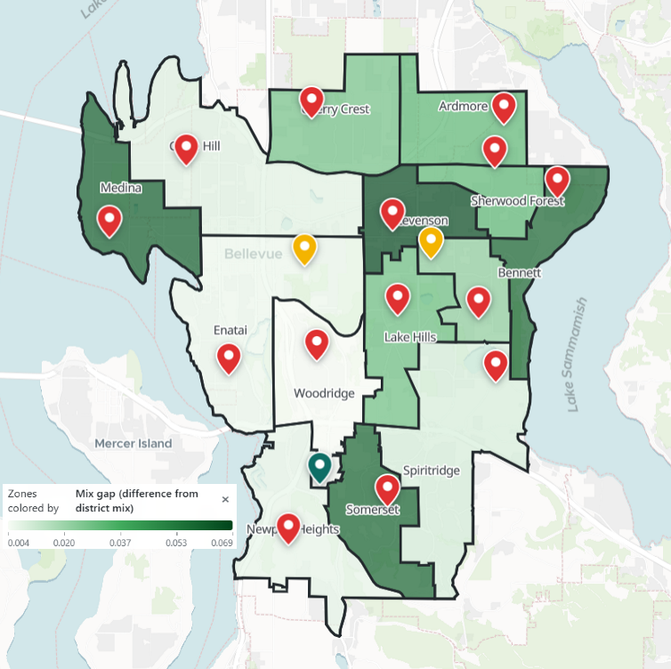
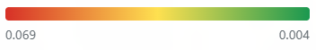
指数的数值取决于计入哪些组别（我们用六个：白人、亚裔、西语裔、非裔、 两个及以上族裔、其他），并且描述的是分化，不是意图，也不是收入。 分化低不自动等于"好"，分化高也不自动等于"坏"——这些数字只说各分区有多相像。
项目可达性 — 家庭还够得着可选项目吗？
部分测量
有些项目设在特定学校，所以当学校关闭或项目搬迁时，即使自家学校没变， 到最近设点的距离也会变。2023 年：高阶学习项目从 Spiritridge 迁到 Woodridge， Eastgate 的 Olympic 项目迁到 Spiritridge，Jing Mei（中文沉浸）搬进了原 Wilburton 的校舍。 2023 年之后 Bennett 增设了日语沉浸班。
就全学区而言，到最近设点的平均距离几乎没动——高阶学习 ， 沉浸项目和定点特殊教育的变化同样很小。但平均数掩盖了方向相反的局部摆动：
- Woodridge 居民到高阶学习的距离 ——项目来到了他们身边。
- Spiritridge 居民到它的距离 ——项目离开了他们。
- 原 Eastgate 区域到定点特殊教育的距离 ——Olympic 项目原本就设在 Eastgate。
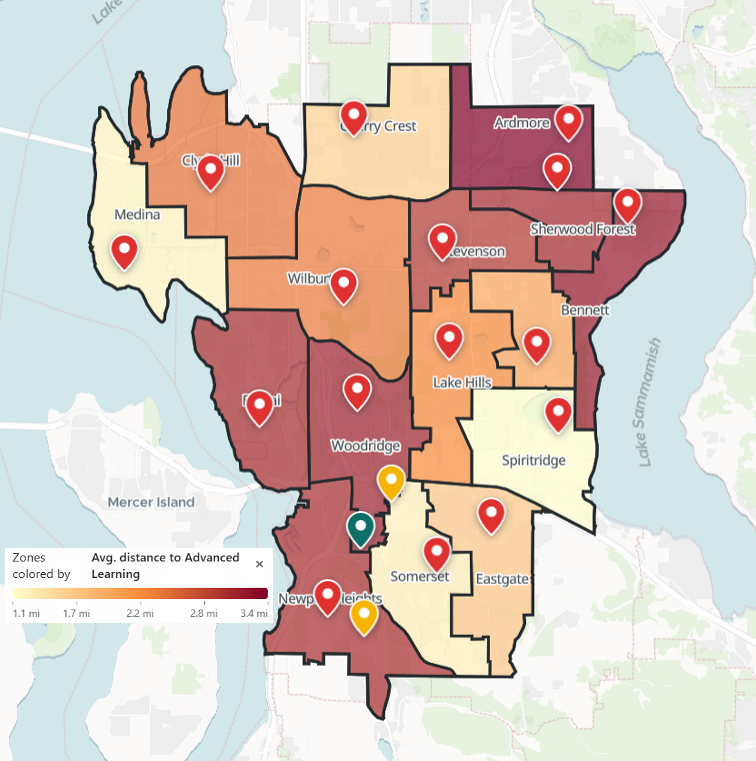
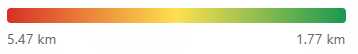
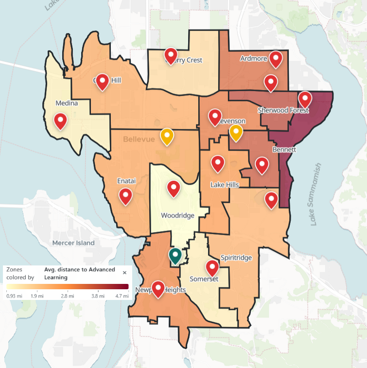
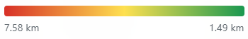
为什么只算"部分测量"：距离回答的是能不能到达， 不是能不能进入——资格、竞争性项目的录取、有没有空位，都不在任何地图上。 2018 年前的项目位置记录太少无法比较，所以这张卡只涵盖 2023 年的变更。
特殊教育 — 定点服务有多远？
部分测量
这一项单独成卡，与可选项目分开，因为特殊教育服务是一项法定权利，不是一种选择。 每所学校每天都在服务有 IEP 的学生；设在特定校点的是学区的三个密集支持项目—— Olympic（自闭症谱系）、Pacific（发育与智力障碍）、Cascade （社交／情绪／行为）。当一个设点学校关闭，这张项目地图就变了。
就全学区而言，到最近设点的平均距离几乎没动： 。 要紧的是局部。原 Eastgate 区域曾把 Olympic 项目设在自己学校里；关闭之后， 它到定点特殊教育的距离 。 Somerset 也失去了 Eastgate 这个最近设点 （）， 而 Spiritridge——Olympic 的新家——对它的居民来说稍微近了一点。
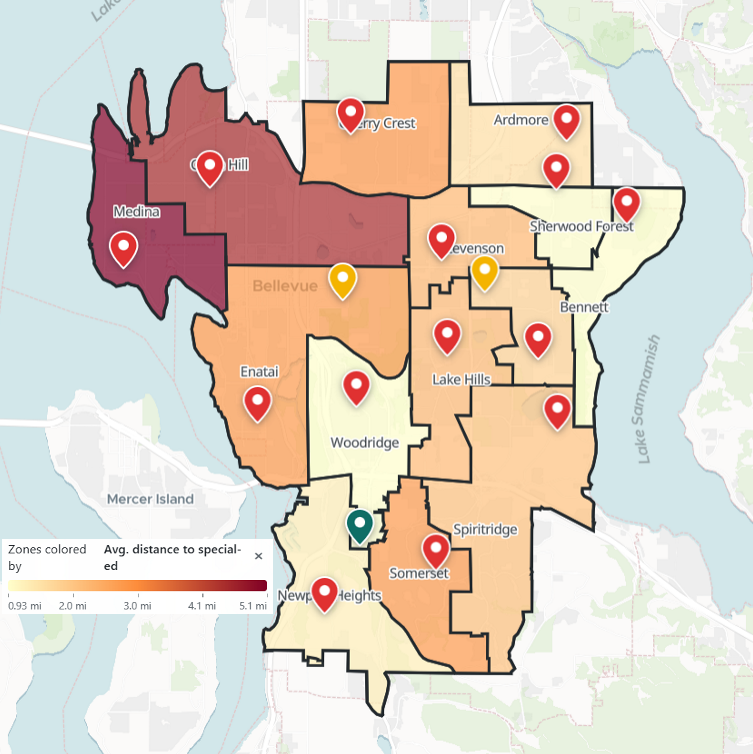
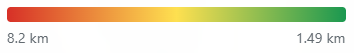
为什么算"部分测量"：学生经由 IEP 程序被安置进这些项目—— 校点由学区指定，并不总是最近的那个。距离描述的是项目地图的地理，不是任何家庭的实际安置。 融合支持和融合学前班存在于许多学校，在地图工具中按学校逐一列出。
社区完整性 — 这些线让社区保持在一起了吗？
部分测量
当一个社区的孩子被划进不同的小学，这个社区就算被"拆分"了—— 这条街的同班同学，下条街就上另一所学校。先说参照，因为它出人意料：在这里，拆分是常态。 贝尔维尤 16 个有学龄儿童的官方社区中，今天有 13 个被拆进两个或更多小学分区。 学校的线和社区的线从来就不是同一张地图。
以此为基线，2023 年的合并改变得出奇地少——但它改变的地方很扎眼。 拆分数变动的社区正好两个：Wilburton 社区从完整变为拆分 （它的孩子原本全部就读一所学校，如今分属 Clyde Hill 和 Enatai），而 Eastgate 的拆分减轻了 （从四所学校变为三所）。失去学校的那个社区，同时失去了唯一共享的学校社群 ——这就是"1 → 2"的人间读法。
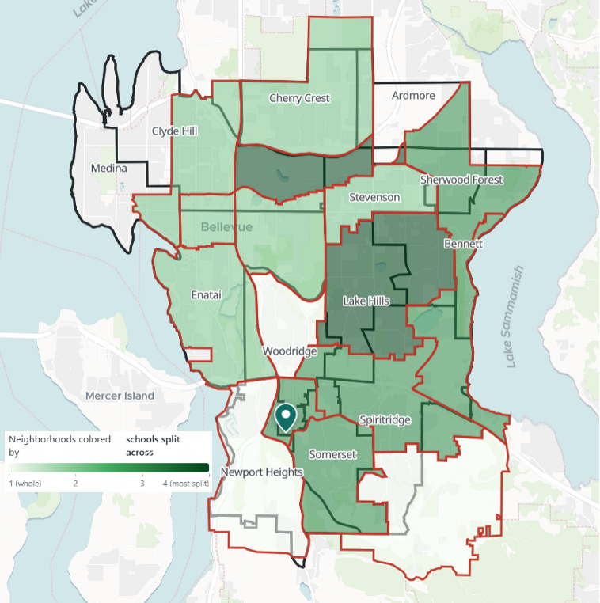
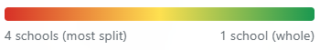
统计只覆盖贝尔维尤市的官方社区（学区还服务 Clyde Hill、Medina 等没有贝尔维尤社区建制的城镇），并且拆分数不是社区感情的测量—— 它数的是学籍归属，不是友谊。当一个社区延伸到学区之外时，那一部分不算进 它的拆分数：那些孩子从来就不归贝尔维尤分配，把他们算进来等于把学区管不着的边界怪到学区的线上。 区外部分在地图工具中每个社区的弹窗里单独列出。预告一下第 4 节： 一条沿着社区边缘走的边界能保住社区完整，却往往让分区的形状得分更难看 ——形状指标惩罚的恰恰是对社区友好的画法。
住房 — 谁住得起每个分区？
部分测量
学区分区也是价格标签：想凭权利入读一所学校，就得住在它的线内， 所以每个分区的住房成本决定了谁能加入它。贝尔维尤的尺度自成参照： 各分区房价中位数从约 80 万美元（Ardmore）到 180 万美元（Medina） ——只有两个分区低于一百万——家庭收入中位数从约 12.4 万美元（Stevenson） 到 20.1 万美元（Cherry Crest）。
因为所有时期用同一份固定的家庭户数据，重画边界只能通过重新组合住宅来改变分区的 住房面貌——而 2023 年确实肉眼可见地重组了它们。吸收了 Wilburton 部分区域 （连同它的公寓和更密的住宅）的 Clyde Hill 分区，收入中位数从约 19.8 万美元变为 18.6 万美元，房价中位数从 166 万变为 148 万——这个分区现在横跨的住房范围比以前宽得多。 Spiritridge 的收入中位数从约 17 万升到 18.2 万。没动过的分区一美元都没变 ——同样的家庭，同样的线。
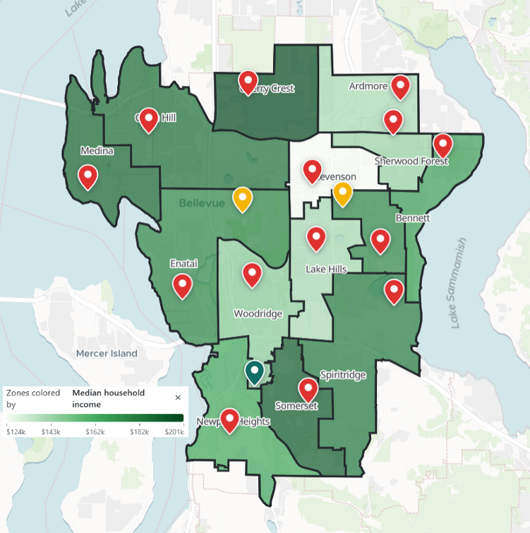
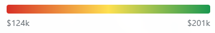
金额为美国社区调查 2019–2023 估计（普查局的家庭户调查）， 按居住位置分摊到各分区——它们说的是谁住在哪里，不是重划对房价做了什么。 学校归属会不会推动房价（"资本化"）是一个真实的研究问题，我们刻意不在此下断言； 地图工具里的房价历史图是背景，不是归因。
语言 — 多语家庭住在哪里？
部分测量
普查把家中没有 14 岁及以上成员英语说得非常好的家庭户称为"英语能力有限" ——对这些家庭来说，学校的信件、会议和截止日期最难应对。就全学区而言， 约 9% 的家庭户符合这一定义，但分布并不均匀：今天的分区从 2.5%（Medina） 到 13.1%（Somerset）——同一学区内相差五倍。
在极端处，利害变得具体。Ardmore——2023 年修订中被保留的学校—— 家庭中使用 45 种语言，3约 38–40% 的学生是英语学习者，2,5 这是它获得联邦 Title I 支持资格的低收入、多语言面貌的一部分。
按比例看，2023 年的线几乎没动这张地图：Clyde Hill 11.7% → 11.3%， Enatai 8.5% → 9.1%，Spiritridge 5.5% → 5.2%。按数量看 ——点一下切换按钮——变化是真实的：被关闭的 Wilburton 分区 拥有全学区最大的多语人口群之一，约 970 个英语能力有限的家庭户， 对他们的责任移交给了 Clyde Hill 和 Enatai——这两个分区如今背着全学区最大的两个 英语能力有限户数（约 1,020 和 940 户）。百分比之所以持平，只是因为接收方的分区本来就大、 本来就多语。
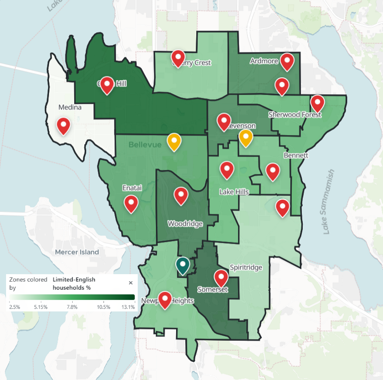
为什么算"部分测量"：多语家庭住在哪里可以测量； 他们能否有效地跟上并回应合并过程（翻译材料、会议形式、时间安排）是一个过程问题 ——归第 6 节。双语项目在上面的项目可达性卡片里。
初中与高中 — 没人重划却起了涟漪
部分测量
这里有一个看起来什么都不是的发现：初中和高中的边界完全没有变—— 2018 年没变，2023 年也没变。只有小学的线动了。这个"什么都没发生"你可以在地图工具上亲自验证。
但线不变不等于学校不变，原因是升学对口关系—— 哪些小学的毕业班一起升入哪所初中。一所初中的新生班是由它下游的小学社群拼成的， 而 2023 年重组了其中一些社群：原 Eastgate 分区的孩子如今是在 Spiritridge 而不是 Eastgate 读完小学后到来的。同一栋楼，同一条边界，一个织法不同的新生班。
这种结构性张力 2023 年之前就有、现在仍在：小学分区并不整齐地嵌在初中分区里。 Phantom Lake 的孩子约按 54/46 分入两所初中，Stevenson 则在初中和高中 两个层级都被拆分——那里的家庭天生面对一个选择：保住小学社群，还是就近入学。 2023 年的变更没有制造这种张力，但每次重划都会重新洗牌由谁来经历它。
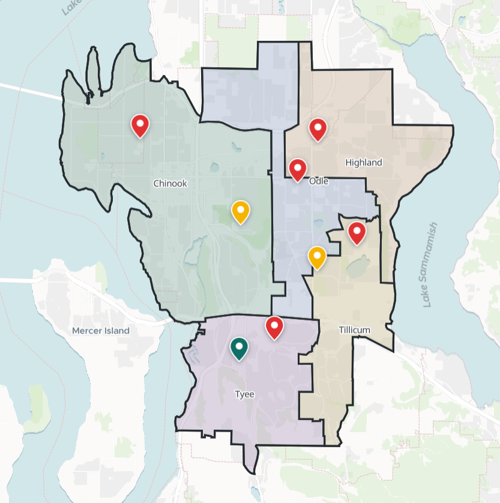
"部分测量"：边界的稳定性和对口拆分是算出来的； 一个重新织成的新生班对身在其中的学生来说是什么感受，不是一个数字。
稳定性 — 同样的街道多久被重划一次？
部分测量
一张边界地图可以在任何单独的年份看起来都合理，却因为不停变动而让人难以在其下生活。 这里的参照是孩子自己的时间线：小学要读六年，所以相隔五年的两次重划可以落在同一个学生身上。
这正是故事中心发生的事。Wilburton 区域在 2018 年被重划 （从 Woodridge、Enatai 和 Clyde Hill 各划一块给全新的学校），2023 年又被重划 （学校关闭后交给 Clyde Hill 和 Enatai）。一个在 Wilburton 开办时入读幼儿园的孩子， 还没读完五年级，就读的学校就不复存在了。2 Enatai 和 Clyde Hill 把这个循环倒着走了一遍：2018 年把地盘交给 Wilburton， 2023 年又收了回来——还多收了一些。
三个时期数下来：学区的大部分被重划了零次——多数分区在三张地图上完全一致。 少数区域动了一次。而有一片区域——约 8.5 平方公里、 住着约 1,200 名儿童——被重划了两次。不稳定并没有被摊开， 而是两次都压在同样的街道上。这种担忧到过委员会自己的桌上：2023 年投弃权票的两位委员之一 Jane Aras 指着贝尔维尤持续的建设问道："我怎么面对同一批孩子，说'对不起，孩子们， 我们又要挪你们一次'？"2,3
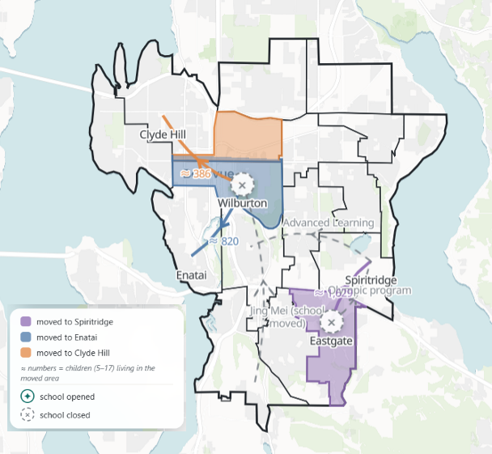
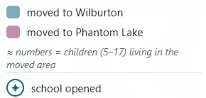
为什么算"部分测量"：每片区域被重划多少次是个计数 （零、一或二，见上）；反复重划对孩子的友谊和家庭的计划意味着什么，不是一个数字。 2018 年的边界来自另一个（联邦）数据源，所以 2018 年的地块是接近的估计；2023 年的地块是精确的。 至于 2018–2023 的急转弯是本可避免的规划失误，还是对真实反转的入学趋势的合理回应， 我们把判断留给读者——入学数字在容量卡片里。
参与 — 决定之前，谁被听见了？
仅描述
上面的每项影响问的都是这个决定做了什么。这一项问的是这个决定是怎么做出的 ——这也是我们的数字能说的最少的一项，这一点本身值得坦白。 在纸面上，每个家庭得到的是同一套程序：同一批公开会议和意见渠道，向全学区开放，人人相同。 真正的问题是，这种"相同"对每个人是否起了相同的作用—— 一个打两份工的家庭，或一个用第二语言应对这套程序的家庭， 与一个有时间、有英语、熟悉学校政治的家庭，实际被听见的机会是否一样。
记录简述：从七校候选名单（2023 年 1 月中旬）到委员会 3 票赞成、2 票弃权的表决 （3 月 16 日），中间约 八周。2,3 每一步都有正式渠道——学校开放日、委员会听证、最后一场意见之夜、审议委员会。 有争议的是可及性：每场关键会议都定在工作日下午 4:30、同一栋中心建筑 ——我们的路径计算显示这个地点接近学区的车程中心 （学区任何角落驾车约 18 分钟内可达），所以障碍是钟点，不是距离；11 七个 PTA 的联名信说方案没有为多语家庭翻译；9 坐在会议室里的家长是从电视新闻稿得知这项建议的；3 而在最后一周，Eastgate 的华人移民家庭印了数千份中英双语传单、挨家挨户走访 ——他们说学区的通知没有传到他们那里；学区说学校通过多个渠道定期发送了更新； 无论哪种说法成立，这些家庭不得不自己动手搭建的补救，是一个双语的补救。3
意见确实改动了计划的一部分：Ardmore 被撤下名单——临时督学把这归功于 "家长们请求给他们一个机会"12—— 由社区成员及受影响学校家长和教职员组成的审议委员会，在 PTA 联名信质问为何没有公民委员会之后的 几周内成立了9,11 （学区称之为"建议提出以来设立的"参与机会，未说明是否由联名信促成）。 结构性的决定和时间表从未移动。给个参照：学区 2016 年为同一所学校画分区时， 参与环节持续了约一年地图才获批，再过两年变更才生效；这一次从候选名单到表决是八周，当年秋天生效。 完整的过程记录——日期、渠道、可及性事实、什么被改变了， 以及学区 2016 年与 2023 年底的流程对比——在"学区总览"里：
研究者用 Arnstein 的公民参与阶梯、Tyler 的程序正义这类框架给此类过程打分 ——两者本质上都是评价性的，所以本站只点出它们的名字而不套用 （见方法）。上面这些事实， 正是那样一次评价所要权衡的材料。
这项影响刻意没有地图图层：过程发生在全学区，而不是逐个分区。 所报告关切的来源列在第 7 节。
十一张卡片到此为止——十项影响， 外加每次小学重划都会捎带上的初中／高中涟漪。
第 4 节
形状能看见什么、看不见什么
每当选区之争上新闻，总有一个论点最先出现：你看这地图长得多怪。 它背后的直觉——形状古怪就说明有人做了手脚——是公众评判边界时最信赖的工具。 本项目正是从这个工具起步的，所以这一节认真对待它而不是打发它： 一个形状得分究竟能告诉你 2023 年发生在家庭身上的什么？
先说诚实的局限：公式是盲的
我们的主形状得分 Polsby–Popper 把分区的面积和周长做比较： 正圆得 1 分，轮廓越细碎，越接近 0。贝尔维尤的小学分区大约在 0.25 到 0.65 之间。 注意这个公式里有什么：面积和周长。没有任何人、价格、项目或通勤时间出现在里面。 从构造上说，形状得分测不了第 3 节十一项影响中的任何一项——不是因为公式差， 而是因为它回答的问题和人们以为的不一样。
再说诚实的肯定：形状仍然相关
然而公众的直觉并不愚蠢。被拉长的分区往往会让一些家庭离校舍很远； 更差的形状和更长的路程经常一起出现，因为它们出自同一块地理。形状可以像一个烟雾报警器： 它看不见火，但有火时常常会响。麻烦在于，报警器也可能在火灾中保持沉默， 或者因为烤糊的吐司响个不停。2023 年的合并恰好给这三种情形各出了一个干净的例子：
① 报警器起作用 — Spiritridge。吸收 Eastgate 区域把这个分区拉得很长： 它的形状得分从 0.581 跌到 0.314，是全学区最大的跌幅。而这一次，古怪的形状真的伴随着人的代价： 分区的平均驾车时间从 4.0 分钟升到 7.5 分钟——19 分钟的步行变成了 41 分钟的步行。 形状发出了警报，警报也报对了。
② 报警器保持沉默 — Woodridge。Woodridge 的得分前后一模一样： 0.340 对 0.340。它的边界一米都没动。人类发明过的每一个形状指标都说这里什么都没发生。 与此同时，它的校舍从 56% 满变成 100% 满，到高阶学习项目的距离从 5.1 公里塌缩到 1.5 公里，因为项目搬了进来。一个分区被彻底改变了，而形状看不见 ——同样的盲区也藏住了初中和高中的涟漪：没有线移动，新生班却变了。
③ 报警器乱叫 — 湖岸线。Medina 得 0.361，Clyde Hill 得 0.299， Newport Heights 得 0.277——位列全学区"最差"的形状，部分原因是它们的分区 沿着华盛顿湖的湾汊和岬角走。一条跟着湖泊、公路或社区边缘走的边界， 看起来和被人做了手脚的边界一模一样——而沿社区边缘画线恰恰是完整性卡片所称许的 保全社区的画法。在这里，得分惩罚的是无辜的解释。
今天的形状得分，从最差到最好。深青色 = 沿华盛顿湖的分区； 浅青色 = 挨着萨玛米什湖的分区。得分最低的 Bennett 就在萨玛米什湖边 ——另一个湖同样拉低得分。而 Spiritridge 是反例：它的边界只有一小段是湖岸， 低分主要来自 2023 年的拉伸（展品 ①），不是水。水在这里解释了很多 ——但从来不是全部，两个方向都是。
安静的第四种情形是学区的大部分：十一个分区什么都没动，报警器正确地保持了沉默。
一张图看全部
下面每个点是今天 14 个分区之一。左右：它的形状得分在 2023 年变了多少 （越靠左 = 形状变得越"差"）。上下：一项关于人的测量变了多少。 切换纵轴的测量，看故事怎么变：
共 14 个分区；两个被关闭的分区没有"之后"，无法作图。 青色点 = 2023 年边界变动的三个分区；灰色 = 未变动。坐标单位跟随距离／时间切换按钮。 仅为描述——图上显示的是共同变动，不是因果，而且 14 个分区远不够做统计； 它是一幅图，不是一个证明。
一句话总结：形状告诉你往哪里看，从不告诉你该下什么结论—— 而形状从未变过的那些分区，恰恰是公共讨论跳过的分区，其中一些变化却最大。
第 5 节
谁承担了变化
每一个关于边界变更的公平之争，底下都是一个分配问题：不是"有没有代价？"， 而是"谁付了？"。这一节把这个分配摆出来——为了让自己保持诚实， 它遵守一条在看到任何结果之前就定下的规则：每一块被改划的区域都给同一套事先选定的固定数字。 不突出戏剧性的，不跳过乏味的。
| 被改划区域 | 儿童（5–17） | 白人 | 亚裔 | 西语裔 | 非裔 | 新增驾车 | 新增步行 |
|---|---|---|---|---|---|---|---|
| Eastgate → Spiritridge | ≈ 1,629 | 43.5% | 42.4% | 5.4% | 2.0% | +6.0 分钟 | +42 分钟 |
| Wilburton → Enatai | ≈ 820 | 44.6% | 41.5% | 5.6% | 2.7% | +3.0 分钟 | +25 分钟 |
| Wilburton → Clyde Hill | ≈ 386 | 42.2% | 44.2% | 6.0% | 2.3% | +1.6 分钟 | +19 分钟 |
| 全部改划区域 | ≈ 2,835 | 43.7% | 42.4% | 5.6% | 2.4% | — | — |
| 全学区 | 23,315 | 43.9% | 40.2% | 7.3% | 2.6% | — | — |
从族裔角度读，这张表几乎平淡无奇：被改划区域的面貌与全学区相仿， 每个组别都在学区比例的约两个百分点之内。2023 年的变更没有落在某一个族裔社群头上。 真正集中的是时间：原 Eastgate 区域约 1,600 名儿童的家吸收了其中大部分 ——每天单程多出四十多分钟的步行，无限期。
收入维度才是公共争论真正的所在。争论中心三个分区的钱的事实：
| 分区 | 收入中位数 变更前 → 后 | 房价中位数 变更前 → 后 | 租金中位数 变更前 → 后 |
|---|---|---|---|
| Wilburton（已关闭） | $173k → — | $1.26M → — | $2,784 → — |
| Clyde Hill | $198k → $186k | $1.66M → $1.48M | $2,985 → $2,916 |
| Enatai | $177k → $177k | $1.47M → $1.43M | $2,718 → $2,761 |
通篇使用同一份底层家庭户数据（ACS 2019–2023 估计） ——"之后"的数值之所以变，只是因为分区现在装着不同的住宅。 Wilburton 分区不复存在，所以没有"之后"。
把两边的事实并排放在这里。支撑家长在新闻报道中提出的担忧1,9 ——即方案"偏袒了更富裕的社区"——的是表格的上端： Wilburton 区域拥有全学区最密集的住宅之一和最大的英语能力有限户群之一（见语言卡片）， 它被关闭并并入了下方两个按收入和房价位列全学区最贵的分区。而且这种担忧早于最终地图： 七个 PTA 一月的联名信附上了家庭们自己整理的数据表，指出候选学校在低收入、非裔和西语裔、 英语学习者比例上位居学区前列，而高阶学习项目的设点学校却不在审查之列9 ——信的要点是：无论从那份名单里选中哪几所，负担都会落在这样的社区身上。 指向另一边的是箭头显示的东西：合并发生时，接收分区的中位数下降或持平了， 合并后的分区在人口构成上变得更混合而不是更单一（见构成差距卡片）， 而最重的通勤负担落在了 Eastgate 一侧——其面貌与全学区几乎完全一致。 两栏事实同时为真。我们把担忧作为社区陈述的担忧来报告，把数字作为数字来报告。
有一种背景压力属于这幅图景，却不能归因于它：住房成本。 在任何线移动之前，住在学区里较密集、较可负担角落的家庭就已经承受市场压力， 我们的数据无法把"因为重划而搬走"和"因为房租而搬走"分开。我们把它作为背景陈述，不作为效应。
这样的分配是否可以接受，不是一道数学题。这次重划的代价是真实的，分布是不均的， 而承担了最多某一种代价（时间）的社区，并不是最响亮的担忧所指向的那个社区（收入）。 这种张力正是应当由受影响的公众——而不是这个网站——来权衡的东西。
第 6 节
数字说不了的
本站测量了很多：路线、座位、形状、比例。如果就此打住，就会悄悄暗示 "被测量的就是重要的"——而那个暗示会是全站最不诚实的东西。 所以这一节在把判断交出去之前，把我们的数字够不到的地方明明白白地点出来。
过程本身。这是文字替数字干活的那项影响。记录—— 摆在参与卡片里、完整版在地图工具的"学区总览"里—— 显示每个家庭得到的是同样的渠道，也显示了落得不均的障碍：一个学校教职员公开说 把上班家长排除在外的工作日下午 4:30 的日程，3 一份 PTA 们说从未被翻译的方案，9 直到计划起草之后才出现的审议委员会，11 以及在最后一周自己动手搭建双语宣传的家庭们。3 任何记录都测不到的是那个反事实：有多少声音从未到达会议室， 听到它们是否会改变结果——有记录的案例显示，意见改动过边缘 （Ardmore 被撤下名单），从未改动过结构。事实有据可查；权衡属于读者。
从来就不在地图上的东西。就算数据完美，一次边界分析也看不见：
- 一条路走起来什么感觉。我们的分钟数计的是通勤；它们不知道哪个路口 七岁的孩子不该独自过，哪一段没有人行道。
- 一所学校意味着什么。关闭一所学校不只是重新分配学生；它解散了一个 PTA、 师生关系、清晨的仪式——稳定性卡片数的是重划次数，不是一次重划带走的东西。
- 钱到底省没省成。学区预计了节省；审计合并是否兑现了节省、省下的钱买了什么， 是我们数据之外的预算问题。
- 信任。一个决定被如何经历，塑造着它的结果被如何接受。没有图层能测量这个， 假装能测，就是"数据驱动"变成不听人说话的方式。
关于"不可测量"这几个字的一句提醒：它们不意味着不那么重要， 更不意味着可以否认。这个故事里一些最有分量的部分正是因为没人能给它们标上数字， 才住在这一节里。被测量的影响只是摆好了桌子；它们没有做完这顿饭。
所以，这是交接。本站建立在一个前提上：受决定影响的人，配得上拿着事实来评判它。 现在你手里有我们能算出的每一个事实、我们欠你的每一句提醒，以及核查两者的工具。 判断是你的。
第 7 节
本页来源
本页报告的事实和引语可追溯到下列报道与学区记录。凡学区原网页已被撤下的，链接指向存档副本。 支撑各项已测量影响的数据集（普查、ACS、NCES、学区报告、路径计算）另行编目于"方法与来源"。 （来源标题保留英文原文，以便核对原始文献。）
新闻报道，2023 年合并
- [1] KUOW — Families push back on Bellevue Schools' consolidation plans（2023 年 1 月）
- [2] Seattle Times — District holds meetings on possible consolidation（2023 年 2 月）及 Board votes to consolidate 2 elementary schools（2023 年 3 月）
- [3] KOMO — 建议公布当晚、听证周及表决（2023 年 2–3 月）
- [4] KING 5 — 表决、民选官员回应及督学访谈（2023 年，存档）
- [5] FOX 13 — Board votes to consolidate 2 elementary schools（2023 年 3 月）
- [6] MyNorthwest — Board voted in favor of closing two schools（2023 年 3 月）
- [7] Downtown Bellevue Network — District chooses 3 elementaries for consolidation（2023 年 2 月）
- [8] KUOW — No Bellevue middle schools will close, for now；KOMO — 初中研究／暂停（2023 年 10–12 月）
学区记录与一手文件
- [9] 七校 PTA 致贝尔维尤学区委员会的联名信，2023 年 1 月 23 日（PDF）
- [10] BSD — Background：学区对过程的自述（存档）
- [11] BSD — Planning for the Future — Community Update，含官方听证日程与委员会名册（2023 年 2 月，存档）
- [12] BSD — 临时督学媒体问答文字记录，2 月 9 日之后及3 月 9 日之后（存档）
- [13] BSD — 2022–2023 小学合并专页（存档）
- [14] BSD — "Planning for the Future" 合并分析报告（2023 年 2 月；本站通篇引用其入学、容量与项目表格）
2016–2018 年的过程（Wilburton 开办）
- [15] Bellevue Reporter — Residents concerned about attendance distribution（2016 年 5 月）及 Board approves Elementary 18 attendance map（2016 年 9 月）
- [16] BSD — Elementary 18 Attendance Area Committee（存档）
- [17] Bellevue Downtown Association — Newest elementary school set to open（2018 年 6 月）